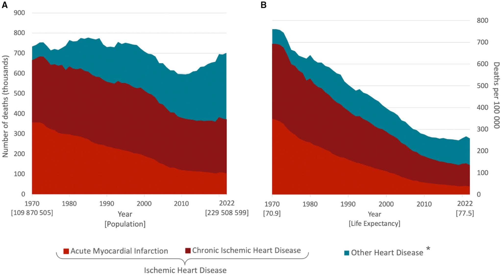

Atrial fibrillation (AFib) is a rhythm problem of the heart's upper chambers, the atria, which beat chaotically instead of in a coordinated way. Heart failure is a different problem: the heart cannot pump or fill well enough to meet the body's needs. The two are closely linked, because AFib raises the risk of both stroke and heart failure12, and many of the same underlying drivers, such as high blood pressure, excess fat, diabetes and poor sleep, feed both conditions.
The group's posts paint a consistent picture. AFib is described as roughly a one-in-three lifetime risk, and one widely shared overview frames it as the end result of years of cardiometabolic stress rather than a random electrical glitch2. That is encouraging, because it means that blood pressure, weight, sleep, alcohol and exercise habits can all matter. For heart failure, the posts focus on modern drug therapy, a handful of supplements and a long list of early-stage research ideas, with admins repeatedly separating what has been tested in people from what has not.
This summary organizes those posts into plain-language sections. It is a summary of group discussion, not medical advice, and the admins consistently suggest discussing any treatment, supplement or exercise change with your own doctor.
What AFib and heart failure are
Atrial fibrillation
AFib is described as the most common sustained heart rhythm disorder. Instead of beating in a coordinated way, the atria fibrillate, producing an irregular and often rapid heartbeat. It is linked to stroke (through clot formation in the atria), heart failure, hospitalizations, reduced quality of life and higher mortality1. Quoting the Mayo Clinic, Louis Nervegna notes that AFib is the most common type of tachycardia (fast heartbeat), and that some episodes will not end unless treated7. The same post notes that a fast rhythm can also come from the lower chambers, where ischemic heart disease (blocked coronary arteries) is the most common cause of ventricular tachycardia, and advises seeing a cardiologist as soon as possible if you have these symptoms7.
A graphic Louis shared suggests a simple starting plan for newly diagnosed AFib: rate control for stability, rhythm control for symptoms, and anticoagulation (blood thinning) to prevent stroke8. A quoted explainer adds that anticoagulants remain the frontline defense against clots forming in the heart in AFib, while statins may give some adjunctive protection through anti-inflammatory and endothelial effects but cannot stop a clot that has already formed; it also says clinical evidence on whether statins reverse adverse heart remodeling is mixed (the post notes it was written with an AI assistant)9. Another post shares a short video on left atrial appendage closure, a minor procedure said to prevent clots in people with AFib; it offers no evidence discussion10.

Heart failure and the ejection fraction spectrum
Heart failure with reduced ejection fraction (HFrEF) is the form where the pump is weak; heart failure with preserved ejection fraction (HFpEF) is the "stiff heart" form, where the heart pumps normally but struggles to relax and fill, so standard pump tests often look normal and few targeted therapies existed11. A 2026 evidence summary Louis shared describes heart failure as a spectrum rather than a single entity5.
Louis states that the number one cause of congestive heart failure is advanced ischemic heart disease12. A US mortality analysis he quoted adds a population view: from 1970 to 2022, age-adjusted deaths from all heart disease fell 66% and heart attack deaths fell 89%, but mortality from other heart conditions rose, with heart failure up 146%, hypertensive heart disease up 106% and arrhythmias up 450%13. Heart failure is also not necessarily a one-way street: an Ohio State cardiologist article shared in the group answers "can heart failure be reversed?" with "sometimes"14.

What raises AFib risk
Cumulative cardiometabolic stress
The overview shared from Luigi Fontana describes the left atrium as only about a millimeter thin. Chronic stressors, namely hypertension, visceral fat, inflammation, dyslipidemia, metabolic syndrome, poor sleep and alcohol, are said to remodel it so that it becomes dilated, stiff and fibrotic, which sets the stage for AFib2. The ARREST-AF post lists the same family of drivers: obesity, hypertension, diabetes, sleep apnea, physical inactivity and excess alcohol1.
Sleep apnea
A Medscape piece shared by Louis notes that obstructive sleep apnea can underlie resistant hypertension, recurrent AFib, type 2 diabetes, heart failure and chronic kidney disease, yet many patients are not sleepy and do not snore. Difficult-to-control blood pressure, nighttime urination or fragmented sleep may be the clues, and a home sleep test was suggested as a good next step by the specialist quoted15.
Exercise: mostly protective, but extremes may have a cost
A cardiologist quoted in the group says exercise generally lowers the risk of cardiac events, but some studies link extreme long-duration exercise, such as marathons and triathlons, with AFib, while the overall effect on blood pressure, cholesterol, diabetes risk and mortality remains positive16. A 2026 joint EAPC/ESC and ACC consensus statement on "masters athletes" (high-volume exercisers over about 35 to 40) says these athletes may have more atrial arrhythmias, coronary atherosclerosis, aortic dilatation and myocardial fibrosis than less active peers17. Louis stresses that the preponderance of evidence still favors net benefit, especially for total mortality, and that the goal of future research is to identify which subsets are harmed17. One article he shared describes a fit runner who collapsed mid-race with a silent 50 to 60% blockage in the left anterior descending artery, with AFib rather than exercise as the trigger18.
Other triggers and associations
- Very cold drinks. A post relaying Joel Kahn says super-cold liquid in the esophagus can trigger AFib in some people; no study is cited, so treat it as anecdotal19.
- TMAO. Cleveland Clinic researchers analyzed blood from more than 5,000 people undergoing heart procedures and linked TMAO, a compound gut bacteria make from nutrients in red meat and other animal products, to higher AFib risk, with cell experiments pointing to changes in the heart's electrical environment20. Louis then corrected a Daily Mail headline that blamed eggs: the study associated blood TMAO with AFib, not egg intake21. He points to an earlier randomized trial from the same group in which four eggs a day, or phosphatidylcholine supplements, did not significantly raise TMAO, whereas choline bitartrate supplements did22.
- Anabolic steroids. A Circulation cohort of 1,189 steroid users versus 59,450 matched controls over 11 years found about 2.3 times the risk of arrhythmias, 3.6 times the risk of heart failure and 8.9 times the risk of cardiomyopathy2324. Louis notes that excess exogenous testosterone is also an anabolic steroid24.
- Energy drinks. An AHA statement quoted in the group says that high caffeine amounts, as in energy shots, may increase the risk of high blood pressure and arrhythmia25.
High-dose omega-3 and AFib
This is the clearest example in the group of a supplement with a rhythm downside. Louis shares a 2021 meta-analysis in Circulation of 7 randomized trials (81,210 participants) in which marine omega-3 increased AFib risk by 25% overall, with risk appearing greater in trials testing more than 1 g/day; a shared summary puts the figure at 49% higher risk above 1 g/day and 11% per additional gram per day3. A 2026 meta-analysis of 35 trials (114,592 people) found that high-dose EPA/DHA was associated with increased AFib risk in people at high cardiovascular risk, but not in people at lower risk, and low doses did not raise risk even in high-risk groups3. A shared mechanism explanation says omega-3s integrate into heart cell membranes and may alter ion-channel signaling3, and a shared post suggests staying at or below 1 g/day of EPA+DHA for most adults3.
The same caution recurs elsewhere. In REDUCE-IT, the trial behind FDA approval of icosapent ethyl (Vascepa), hospitalization for AFib or flutter was higher than on placebo (5.3% vs 3.9%), alongside a modest increase in bleeding (11.8% vs 9.9%), even though major cardiovascular events fell by 25%26. Louis attaches an AFib warning to posts about the EVAPORATE plaque trial and a member's 6 g/day EPA experience, advising people to talk to their doctor before starting high doses2728. Even a post praising the omega-3 index notes that high omega-3 intake appears to raise AFib risk29, and a Bill Harris video he shared concludes that the answer is complicated and may depend on dose and baseline risk30.
Show data
| Icosapent ethyl | Placebo | |
|---|---|---|
| Hospitalized for AFib or flutter | 5.3% | 3.9% |
| Bleeding | 11.8% | 9.9% |
Foods and drinks that may help
Coffee: from "avoid" to "probably fine"
The DECAF randomized trial enrolled 200 habitual coffee drinkers (about 7 cups a week) with persistent AFib or atrial flutter after electrical cardioversion, and randomized them to continue at least one cup of caffeinated coffee daily or to abstain for 6 months. AFib or flutter recurred in 47% of the coffee group versus 64% of abstainers, a 39% lower hazard, with no safety concerns431. The AHA's own summary adds that some people may still find that caffeine triggers or worsens AFib symptoms and advises asking a doctor31. A shared interpretation stresses that the trial does not justify starting or increasing caffeine, especially for people who have had adverse responses4. Hospitalization, heart failure and stroke rates were similar between the groups32.
A later AHA scientific statement quoted in the group says up to 400 mg of caffeine a day (about five 8-ounce cups) is generally safe for most adults and linked to lower risk of several cardiovascular conditions, including heart failure, though more research is needed25. A shared summary adds that benefit appears to flatten after about 3 to 4 cups and rests partly on observational data33. In older adults with AFib, a JAHA study found about 11% better scores on processing speed, coordination and attention among coffee drinkers, and inflammatory markers over 20% lower at 5 cups a day than under 134.
Mediterranean diet and olive oil
Louis shares a video explaining that in the PREDIMED randomized trial, a Mediterranean diet with extra virgin olive oil was associated with a lower risk of AFib; the post gives no effect sizes35. A PREDIMED follow-up using a urinary biomarker of wine found that mild-to-moderate wine drinking was associated with a hazard ratio of 0.5 for cardiovascular events including heart failure, but Louis stresses this is only a possible benefit, that causation is unproven and that alcohol's role is actively debated36. Note that excess alcohol is also listed among AFib drivers1.
Diet quality in heart failure
A JACC: Heart Failure study reported by Medscape linked more than three refined grain servings a day to higher hospitalization risk, while diets rich in vegetables and legumes were linked to better outcomes37. A meta-analysis of 40 studies found about 22% lower heart failure risk per additional 100 mg/day of dietary magnesium, though no link to coronary heart disease overall38.
Treating the risk factors: the evidence for lifestyle programs
The strongest lifestyle-level evidence in the pack is ARREST-AF, published in JAMA Cardiology. In patients undergoing AFib ablation, a structured, physician-led lifestyle and risk factor program produced 61% arrhythmia-free at 12 months versus 40% with usual care, roughly halving recurrence, with better weight, blood pressure and exercise capacity1.
On the drug side, Gokhan Can notes that weight loss is the best drug for people with obesity and that newer GLP-1 drugs can be a significant aid, sharing a report that Zepbound cut heart failure risk in a late-stage study39. A large unpublished, observational AHA 2026 study of 256,492 adults with prediabetes and obesity found GLP-1 users had 25% fewer heart failure cases and less AFib than metformin users over three years; Louis notes it has not been peer reviewed40.
Heart failure: what the posts say about treatment
Guideline-style drug therapy
A Cardiophilia summary of the 2026 evidence update, shared by Louis, lists these shifts: SGLT2 inhibitors are foundational across the ejection fraction spectrum with hard-outcome benefit, finerenone reduces outcomes across ranges, GLP-1 and dual incretin drugs target the obesity phenotype of HFpEF, guideline-directed therapy should start in hospital, and urine sodium can guide diuretic therapy5. A Nature Medicine analysis of over 12,000 adults with type 2 diabetes reported lower heart failure risk with dapagliflozin in carriers of cardiomyopathy-related gene variants (a Fox News summary quoted about 8-fold), suggesting genetic screening might one day guide early treatment; it is observational41.
Supplements: CoQ10 and others
CoQ10 has the most detailed discussion. In Q-SYMBIO, 420 patients with moderate to severe heart failure on standard therapy received 100 mg of ubiquinone three times daily or placebo for two years. There were no significant short-term changes at 16 weeks, but the long-term composite of major cardiovascular events was 15% versus 26% (hazard ratio 0.50), cardiovascular mortality 9% versus 16% and all-cause mortality 10% versus 18%6. Louis calls it the best-supported supplement for this purpose42. A shared analysis cautions that the trial was modest in size, so the findings are promising rather than definitive, and that CoQ10 was added to standard medicines, not used instead642. A news item reports that mitoquinone, a modified form of CoQ10, showed potential to reverse early signs of heart failure in type 2 diabetes, with larger trials planned43.
Show data
| CoQ10 100 mg three times daily | Placebo | |
|---|---|---|
| Major cardiovascular events | 15% | 26% |
| All-cause death | 10% | 18% |
| Cardiovascular death | 9% | 16% |
Melatonin is a cautionary case. An AHA-presented analysis of over 130,000 adults with chronic insomnia linked long-term melatonin use to about 90% higher odds of heart failure. Louis stresses that it is retrospective and cannot prove causation, and that long-term high-dose effects are poorly studied44. Ergo-Log doubts the unpublished study and cites trials suggesting melatonin may help heart failure, so evidence is conflicting45.
Statins and cholesterol
A 20-year follow-up of the WOSCOPS trial reported that 5 years of pravastatin in middle-aged men with high cholesterol gave lasting reductions in mortality and in heart failure and heart attack hospitalizations46. A risk calculator, PREVENT, now estimates 10- and 30-year risk of both atherosclerotic disease and heart failure in adults 30 to 79 without known cardiovascular disease47.
Promising but unproven ideas
The group shares many early-stage findings, and the admins' framing is generally cautious.
- Urolithin A. A pomegranate-derived gut metabolite (about half of people produce it) improved heart relaxation, fibrosis and exercise activity in HFpEF mice and relaxed engineered human heart tissue; human trials in patients are lacking4849. Louis says it is one to keep on your radar, not yet tested in people with heart failure, with small human trials only in healthy people5051.
- Antibiotics for regeneration. Paromomycin and neomycin triggered heart cell proliferation and improved function in mice and pigs after ischemic injury, which Louis calls promising but preclinical52. A Cambridge study used temporary modified mRNA to restart heart muscle cell division after a heart attack53.
- Botanical stem-cell mobilizer. A claim in an interview that all 10 heart failure patients normalized in 6 months is unverified and not published data, as Louis flags54.
- Biomarkers and mechanisms. ARIC proteomics found 18 proteins tied to both heart failure and frailty, stronger for HFpEF55. A mouse and human-data study linked loss of the Y chromosome in blood cells to heart failure in men56, and a review hypothesizes that amyloid-beta may help drive heart failure57. Raising potassium to high-normal was said to reduce ventricular arrhythmias in high-risk patients, though the shared item lacks detail58.
Nuances and common misconceptions
- Association is not causation. The melatonin, GLP-1, wine and magnesium results are observational, and the admins say so364044.
- "Omega-3 is always good" is too simple. Dose and baseline risk seem to matter330.
- "Avoid coffee with AFib" may be outdated, but individual triggers still exist431.
- Exercise advice is not "less is better." The consensus is net benefit, with possible downsides at extreme volumes17.
- Headlines can mislead. The egg-AFib story misread a TMAO study21.
- A vitamin-only approach is not protection. Louis notes that an advocate of vitamins alone died of congestive heart failure in his 60s, an anecdote and not research12.
What this means for you
- Consider that AFib risk tracks blood pressure, weight, sleep, alcohol and fitness, and ask your doctor about screening for sleep apnea if blood pressure is hard to control or sleep is fragmented215.
- If you have AFib, the group's materials emphasize a structured risk-factor program alongside procedures such as ablation1, and rate control, rhythm control and anticoagulation as the starting framework8.
- If you take high-dose fish oil, the admins recommend discussing AFib risk and bleeding with your doctor first2627.
- If you drink coffee habitually, the data from DECAF and the AHA statement suggest moderate intake is generally fine, but stop if it triggers symptoms2531.
- For heart failure, ask your cardiologist how SGLT2 inhibitors and other guideline therapies apply to you5; the admins see CoQ10 as an add-on with promising but not definitive evidence642.
- Be cautious with long-term, high-dose melatonin; the signal is observational and disputed4445.
Frequently asked questions
Does coffee trigger AFib?
In the DECAF trial, people with AFib who kept drinking coffee after cardioversion had fewer recurrences (47% vs 64%)4. Some individuals still find caffeine triggers symptoms, so the AHA advises asking your doctor31.
Can fish oil cause AFib?
High doses may. Meta-analyses linked doses above 1 g/day to higher AFib risk, mainly in people at high cardiovascular risk, with no increase at low doses3.
Do eggs raise AFib risk through TMAO?
Louis argues no: the AFib study measured blood TMAO, not eggs, and a randomized trial found four eggs a day did not significantly raise TMAO2122.
Can lifestyle change really reduce AFib?
In ARREST-AF, a structured program after ablation produced 61% arrhythmia-free at 12 months versus 40% with usual care1.
Is CoQ10 proven for heart failure?
Q-SYMBIO showed fewer major events with CoQ10 on top of standard therapy (15% vs 26%), but the trial was modest in size, so the result is considered promising rather than definitive642.
Can heart failure be reversed?
Sometimes, according to a cardiologist's article shared in the group, and some regeneration approaches are being studied in animals, but none of those is proven in patients145253.